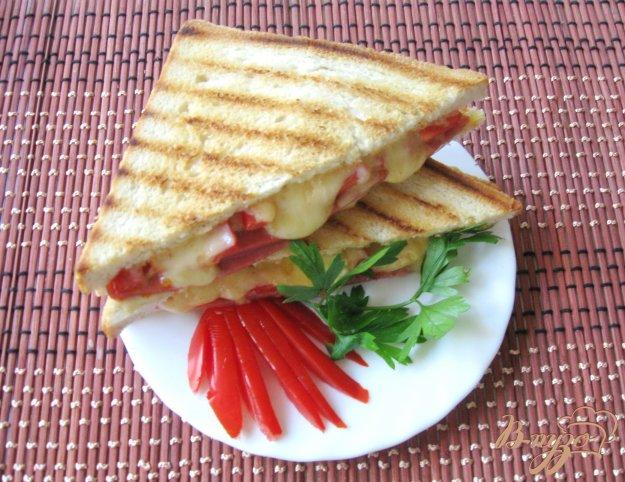

< Меню
Гарячі бутерброди-гриль

Інгредієнти:
- Хліб пшеничний (для тостів) - 50 г.
- Сир голландський - 40 г.
- Ковбаса варено-копчена - 50 г.
- Майонез - 2 ст.л.
- Помідор - 1 шт.
Приготування:
- Пшеничний хліб для тостів змазати майонезом з одного боку.
- Посипати тертим сиром один шматок.
- Викласти на сир нарізану ковбасу.
- На ковбасу викласти нарізаний помідор.
- Помідор посипати тертим сиром.
- Накрити іншим шматком хліба.
- Обсмажити бутерброд з обох сторін на сковороді-гриль.
- Смачного!!!